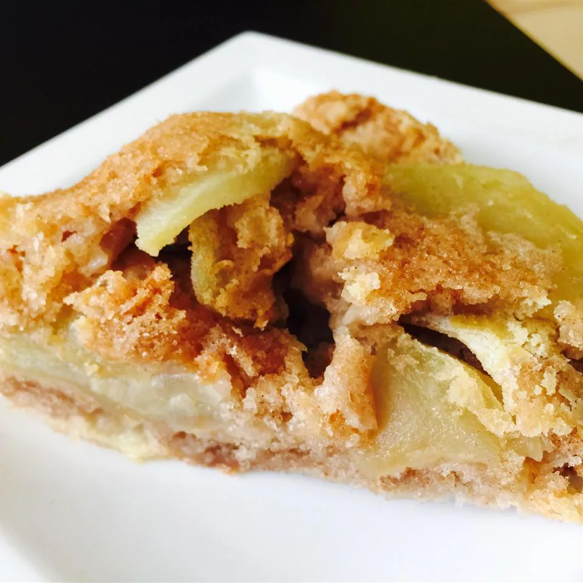

Home
German Apple Cake

Description
This is a delicious German dessert. It's a moist, dense cake that keeps well.
Ingredients
- 1 cup vegtable oil
- 2 eggs
- 2 cups white sugar
- 1 teaspoon vanilla extract
- 2 cups all-purpose flour
- 2 teaspoons ground cinnamon
- 1 teaspoon baking soda
- 1/2 teaspoon salt
- 4 cups apples - peeled, cored, and diced
Steps
- Preheat oven to 350F. Grease and flour 9x13 pan
- Beat oil and eggs in a mixing bowl with an electric mixer until creamy. Add sugar and vanilla. Beat well.
- Stir together flour, cinnamon, baking soda, and salt in a different bowl. Slowly add flour mixture to egg mixture. Mix until combined. Fold in apples by hand using a wooden spoon. Spread this batter into the pan.
- Bake cake in preheated oven until a toothpick comes out clean - about 45 min. Cool on wire wrack.